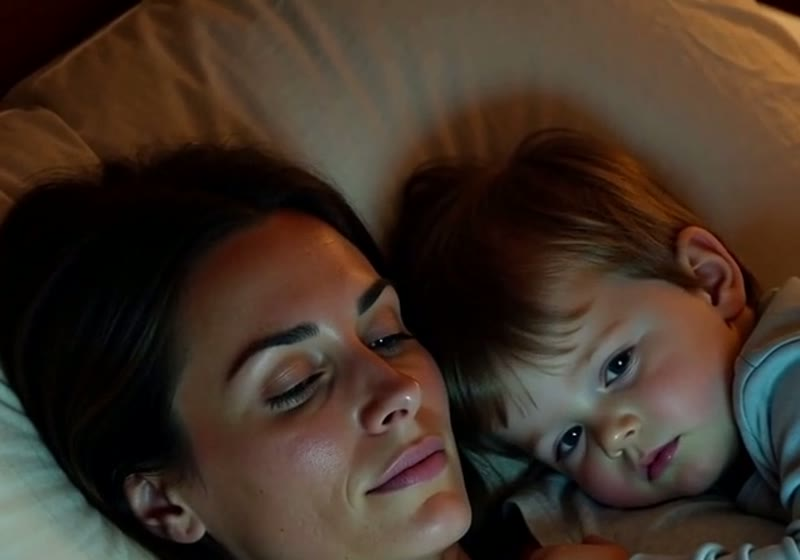
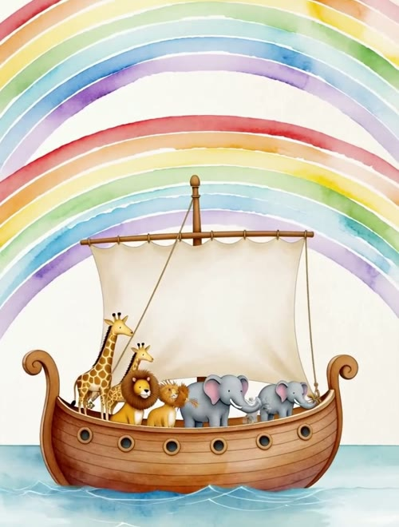
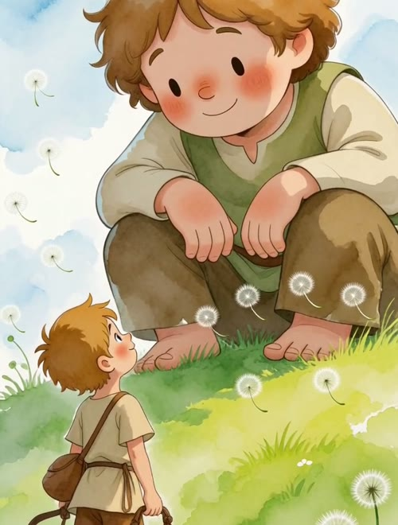
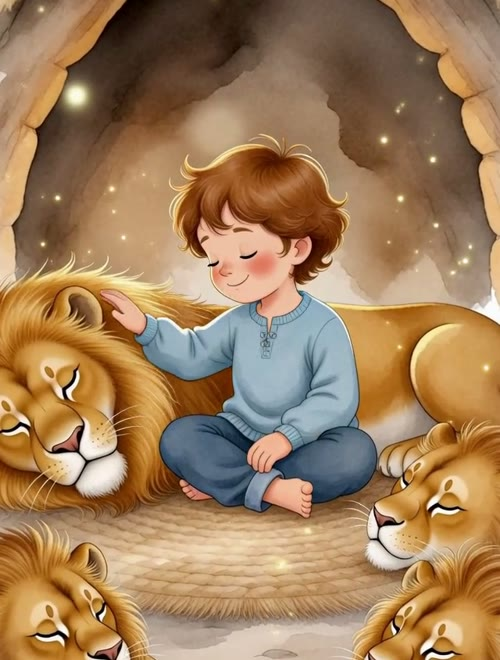

Histórias da Bíblia narradas e ilustradas, no celular, para ouvir juntinho em poucos minutos. Sem propaganda e sem um vídeo puxando o outro.
Criança de 3 anos não entende a Bíblia do mesmo jeito que uma de 8. Por isso, a ordem das histórias muda com a idade.
Faça o teste gratuito de 30 segundos e descubra por qual história começar.
Qual é a idade da criança?
Teste grátis e sem cadastro.
0%
Plano pronto
O que você respondeu
História de entrada
O produto
Abre no celular, sem instalar nada. Aperte o play e deite junto.



Arraste para o lado para ver as ilustrações.
Como funciona
O que muda
Tudo o que você recebe
Tudo isso, uma vez só:
R$ 37
Pouco mais de R$ 3 por história. Sem mensalidade.
Quero as histórias agoraPagamento por Pix ou cartão. Acesso na hora.
Use por 30 dias. Se achar que não valeu, devolvemos 100% do seu dinheiro. Sem pergunta e sem enrolação.
Sendo direto
Se você acha que o YouTube dá conta de ensinar sobre Deus, não compre.
Mas se você quer ser quem conta essas histórias para a sua criança, é aqui que começa.
Foi escrito para crianças de 3 a 9 anos.
Não. É uma história de cada vez.
Sim. São histórias da Bíblia recontadas em linguagem de criança.
O acesso chega no e-mail logo depois do pagamento e abre direto no celular.
Devolvemos tudo em até 30 dias.